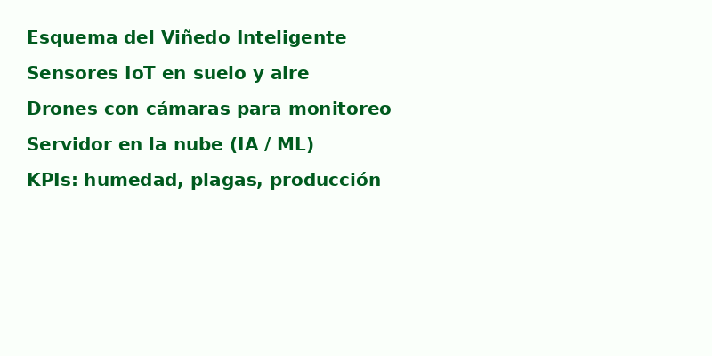
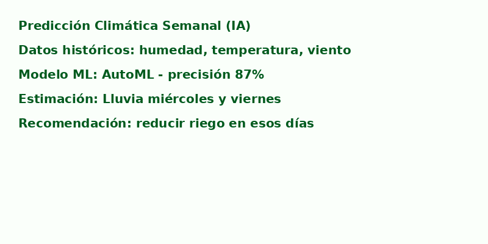
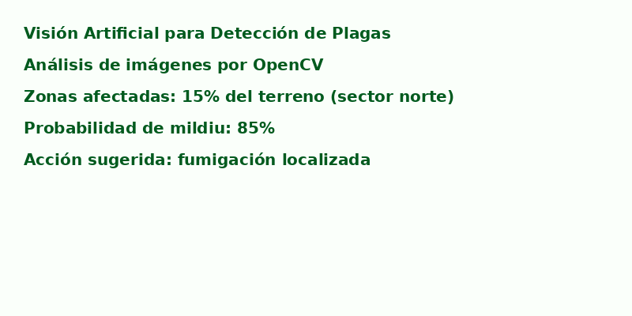

1. Esquema del Sistema Propuesto
El viñedo inteligente integra sensores IoT, drones con cámaras OCR y modelos de IA para optimizar el cultivo.

- Sensores de humedad, temperatura, PH y luz solar en el suelo.
- Drones para monitoreo visual y detección de plagas.
- Estación meteorológica conectada.
- IA en la nube para predicción y toma de decisiones.
2. Resultados Generados por IA
Se simularon predicciones y análisis mediante herramientas como AutoML y OpenCV.


- Predicción de lluvias semanales con modelos climáticos.
- Detección de áreas con estrés hídrico o presencia de mildiu.
- Mapas de calor generados para toma de decisiones.
3. Análisis y Reflexión
Este sistema permite optimizar recursos, anticipar riesgos y mejorar el rendimiento del cultivo.
- Beneficios: uso eficiente del agua, monitoreo constante, decisiones precisas.
- Retos: costos de implementación, necesidad de capacitación técnica.
- Oportunidades: escalabilidad a otros cultivos y mejora en la rentabilidad.
4. Informe Técnico
Resumen del diseño y tecnologías seleccionadas:
- Sensores IoT: SoilWatch, DHT22
- Drones: DJI Phantom con cámara OCR
- IA: Google Cloud AutoML, Python + Scikit-learn, OpenCV
- Flujo de datos: Captura → Procesamiento → Análisis → Decisión